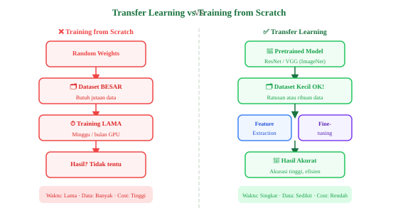

Transfer Learning & Fine-Tuning
Teknik paling praktis dalam Computer Vision modern: memanfaatkan model pretrained untuk task baru dengan data terbatas dan waktu training yang singkat.
1. Apa itu Transfer Learning?
Transfer Learning adalah teknik memanfaatkan pengetahuan yang sudah diperoleh model dari satu task/dataset untuk digunakan pada task/dataset lain. Alih-alih melatih CNN dari awal (random weights), kita menggunakan model yang sudah dilatih pada dataset besar (seperti ImageNet dengan 14 juta gambar) sebagai titik awal.

Seperti seseorang yang sudah ahli bermain piano, lalu belajar keyboard/organ. Mereka tidak mulai dari nol — pengetahuan musik yang ada ditransfer ke instrumen baru!
2. Mengapa Transfer Learning Bekerja?
CNN yang dilatih di ImageNet mempelajari representasi visual yang universal:
- Layer awal: tepi, sudut, warna, gradien — berguna untuk SEMUA gambar
- Layer tengah: tekstur, bagian objek — berguna untuk BANYAK domain
- Layer akhir: objek spesifik ImageNet — perlu diubah untuk task baru
| Aspek | Training from Scratch | Transfer Learning |
|---|---|---|
| Data yang dibutuhkan | Jutaan sampel | Ratusan–ribuan cukup |
| Waktu training | Minggu/bulan (GPU cluster) | Jam/hari (GPU tunggal) |
| Biaya komputasi | Sangat tinggi | Rendah–menengah |
| Risiko overfitting | Tinggi (data kecil) | Rendah (bobot sudah baik) |
| Akurasi akhir | Tidak tentu | Umumnya tinggi |
3. Dua Pendekatan Transfer Learning
Feature Extraction
Seluruh backbone dibekukan (freeze). Hanya FC layer/classifier baru yang dilatih. Cocok untuk dataset sangat kecil (<1000 sampel) atau domain mirip ImageNet.
Training: Cepat · Risiko: Rendah · Kontrol: MinimalFine-Tuning
Sebagian/seluruh backbone dibuka (unfreeze) dan dilatih ulang dengan learning rate kecil. Cocok untuk dataset cukup besar atau domain berbeda dari ImageNet.
Training: Lebih lama · Akurasi: Lebih tinggi · Risiko: Butuh LR kecilKapan Menggunakan Masing-Masing?
| Kondisi | Strategi |
|---|---|
| Data kecil + domain mirip ImageNet | Feature Extraction |
| Data kecil + domain berbeda | Feature Extraction + sedikit Fine-tuning |
| Data besar + domain mirip | Fine-tuning seluruh model |
| Data besar + domain sangat berbeda | Fine-tuning penuh / Train from scratch |
4. Implementasi Transfer Learning
Feature Extraction dengan ResNet-50
import torch
import torch.nn as nn
from torchvision import models
# 1. Load model pretrained (ImageNet)
model = models.resnet50(weights='IMAGENET1K_V2')
# 2. Freeze semua layer (Feature Extraction mode)
for param in model.parameters():
param.requires_grad = False
# 3. Ganti classifier dengan head baru untuk 5 kelas
num_features = model.fc.in_features # 2048 untuk ResNet-50
model.fc = nn.Sequential(
nn.Linear(num_features, 256),
nn.ReLU(inplace=True),
nn.Dropout(0.5),
nn.Linear(256, 5) # 5 kelas baru
)
# Hanya parameter FC baru yang dilatih
trainable = [p for p in model.parameters() if p.requires_grad]
print(f"Layer yang dilatih: {len(trainable)} parameter tensor")
optimizer = torch.optim.Adam(model.fc.parameters(), lr=1e-3)
Fine-Tuning: Unfreeze Layer Terakhir
import torch
from torchvision import models
import torch.nn as nn
model = models.resnet50(weights='IMAGENET1K_V2')
# Freeze semua kecuali layer4 dan fc
for name, param in model.named_parameters():
if 'layer4' not in name and 'fc' not in name:
param.requires_grad = False
# Ganti head
model.fc = nn.Linear(2048, 10)
# Fine-tuning: LR berbeda untuk backbone vs head
optimizer = torch.optim.Adam([
{'params': model.layer4.parameters(), 'lr': 1e-5}, # LR kecil untuk backbone
{'params': model.fc.parameters(), 'lr': 1e-3}, # LR normal untuk head
])
print("Layer yang dilatih:")
for name, p in model.named_parameters():
if p.requires_grad:
print(f" {name}: {p.shape}")
Hugging Face: Image Classification
from transformers import ViTForImageClassification, ViTImageProcessor
from datasets import load_dataset
import torch
# Load pretrained ViT
model_name = "google/vit-base-patch16-224"
processor = ViTImageProcessor.from_pretrained(model_name)
model = ViTForImageClassification.from_pretrained(
model_name,
num_labels=10, # Sesuaikan dengan kelas task kita
ignore_mismatched_sizes=True # Ganti head lama
)
# Proses gambar
from PIL import Image
img = Image.open("test.jpg")
inputs = processor(images=img, return_tensors="pt")
# Prediksi
with torch.no_grad():
outputs = model(**inputs)
logits = outputs.logits
pred_class = logits.argmax(-1).item()
print(f"Predicted class: {pred_class}")
5. Evaluasi Model: Confusion Matrix & Metrik
Setelah training, evaluasi performa model secara komprehensif:
| Metrik | Formula | Kapan Gunakan |
|---|---|---|
| Accuracy | TP+TN / Total | Dataset seimbang |
| Precision | TP / (TP+FP) | Minimasi false positive |
| Recall | TP / (TP+FN) | Minimasi false negative (medis) |
| F1 Score | 2×P×R/(P+R) | Dataset tidak seimbang |
| AUC-ROC | Area under ROC curve | Evaluasi threshold-independent |
from sklearn.metrics import (classification_report,
confusion_matrix, accuracy_score)
import numpy as np
# Prediksi vs ground truth
y_true = [0, 1, 2, 0, 1, 2, 0, 1, 2]
y_pred = [0, 0, 2, 0, 1, 1, 0, 1, 2]
# Accuracy
acc = accuracy_score(y_true, y_pred)
print(f"Accuracy: {acc:.2%}")
# Laporan lengkap
classes = ['Cat', 'Dog', 'Bird']
print(classification_report(y_true, y_pred, target_names=classes))
# Confusion Matrix
cm = confusion_matrix(y_true, y_pred)
print("\nConfusion Matrix:")
print(cm)
# Baris = actual, Kolom = predicted
# Diagonal = prediksi benar
📌 Rangkuman Materi 05
- Transfer Learning = gunakan pengetahuan model pretrained untuk task baru.
- Feature Extraction: freeze backbone, latih hanya head baru — cocok data kecil.
- Fine-Tuning: unfreeze sebagian backbone dengan LR kecil — akurasi lebih tinggi.
- ResNet, EfficientNet, ViT adalah model pretrained populer untuk CV.
- Evaluasi dengan accuracy, F1-score, dan confusion matrix sesuai kebutuhan dataset.